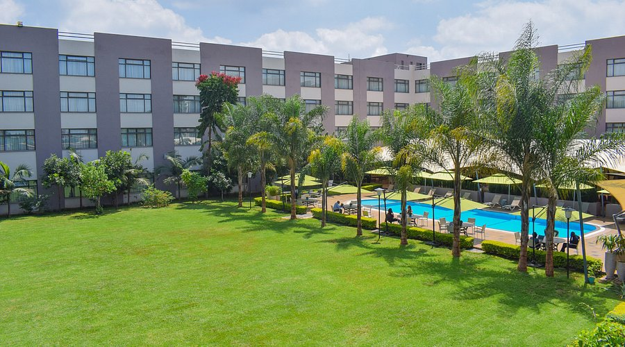
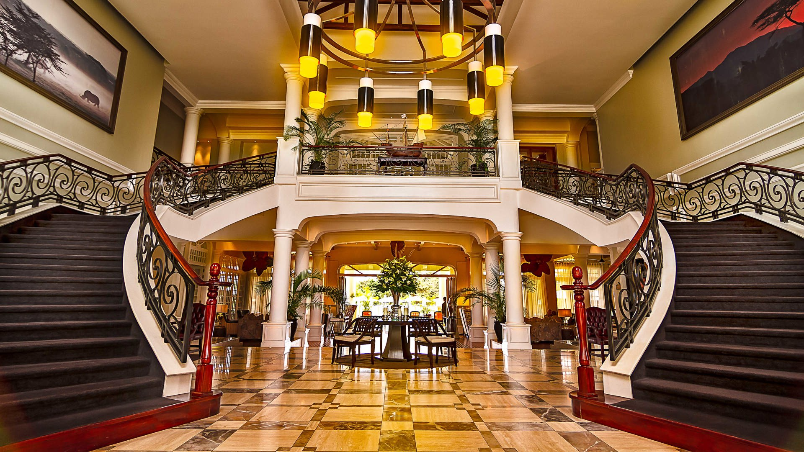
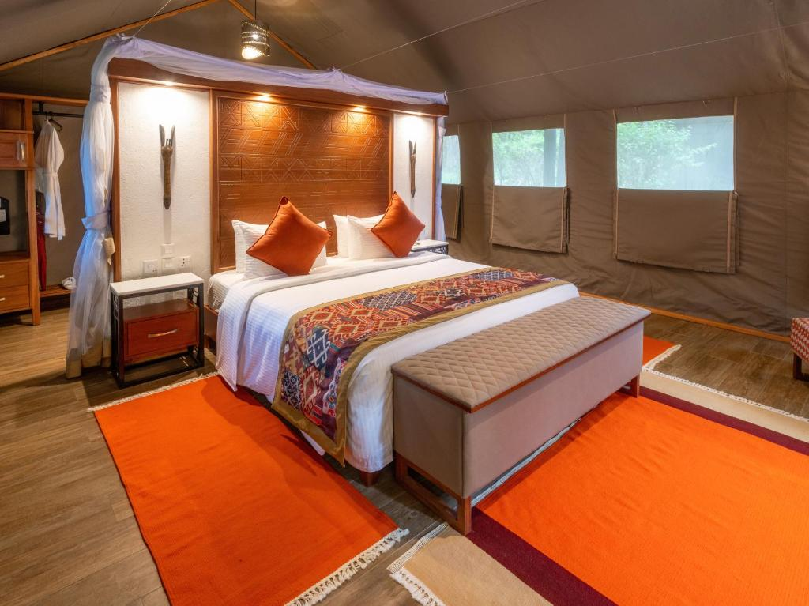
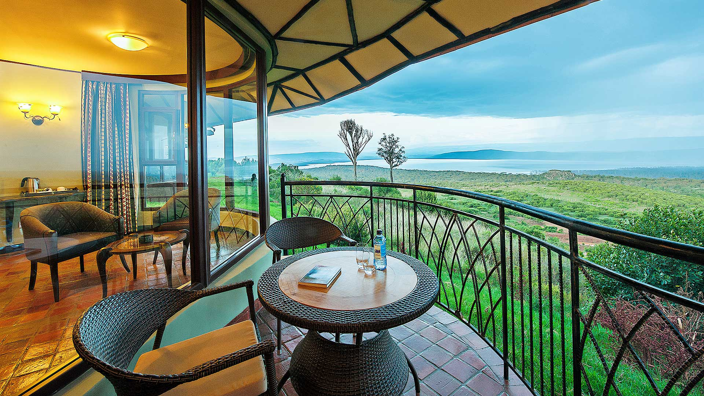
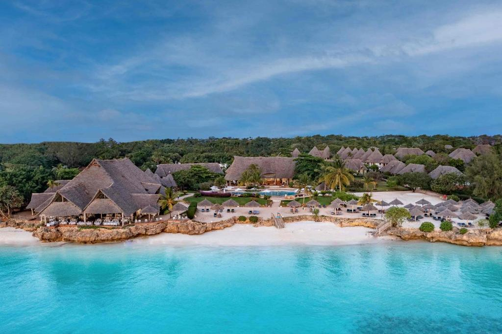
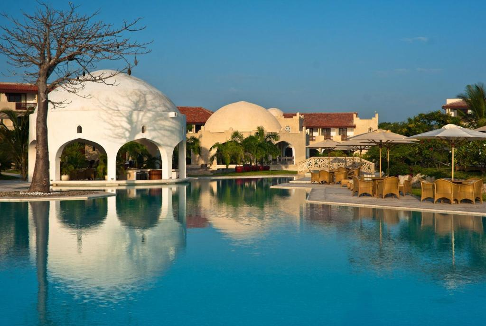
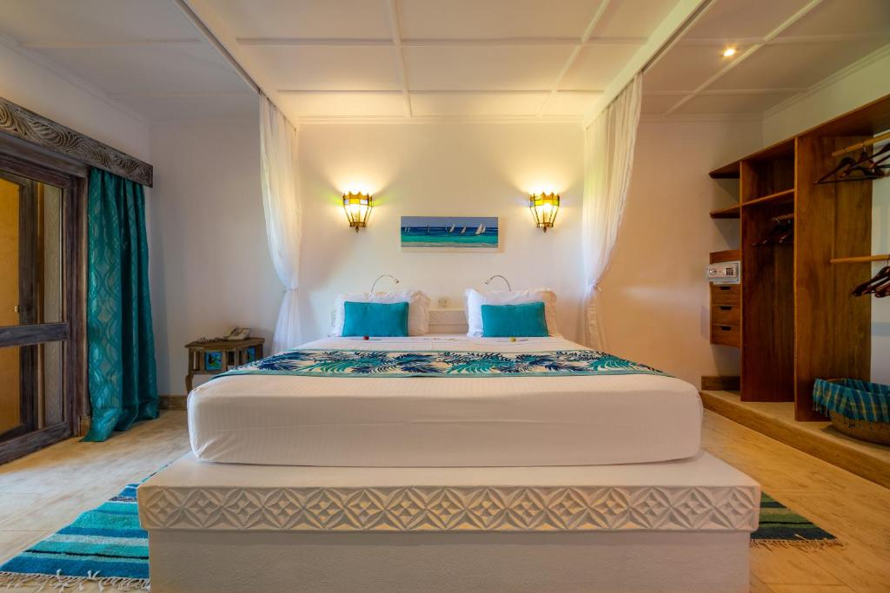

search
language
Experience the ultimate Kenya adventure from wildlife safaris in Masai Mara to pristine Indian Ocean beaches in Diani
Embark on the ultimate 14-day luxury bush and beach safari combining Kenya's most spectacular wildlife destinations with extended relaxation on the pristine shores of Diani Beach. This comprehensive itinerary offers the perfect blend of thrilling wildlife encounters in Masai Mara, serene lake experiences at Naivasha, iconic elephant sightings in Amboseli, red earth adventures in Tsavo, followed by generous beach time on Diani's famous white sand beaches.
Begin your adventure in Nairobi, Kenya's vibrant capital city, before journeying to the legendary Masai Mara, famous for its abundant wildlife and the spectacular Great Wildebeest Migration. Continue to Lake Nakuru and Naivasha for flamingo sightings and tranquil boat rides, then explore Amboseli National Park with its iconic views of Mount Kilimanjaro and elephant herds. Experience the vast wilderness of Tsavo with its red elephants and dramatic landscapes, before concluding with four nights of pure relaxation at Diani Beach.
Our expert guides will provide deep insights into each unique ecosystem, ensuring you gain profound understanding of Kenya's wildlife while enjoying unparalleled game viewing opportunities. With luxurious accommodations at premier lodges including high-end properties throughout the safari and beach portions, you'll experience the perfect blend of wilderness adventure and coastal luxury.
This comprehensive journey is ideal for travelers seeking extensive wildlife excitement and extended beach relaxation, photography enthusiasts, and those wanting to experience Kenya's diverse landscapes from savannah plains to tropical coastline in one unforgettable luxury experience.
Today's Highlight: Relaxed arrival and orientation; first taste of Kenyan hospitality.
Distance / Time: Airport transfer: 30–45 mins (depending on hotel location).
Arrive at Jomo Kenyatta International Airport, where a friendly representative will be waiting to welcome you to Kenya. From the moment you step off the plane, the anticipation of adventure begins. You will be transferred to your Nairobi hotel, enjoying a smooth ride through the city's bustling streets and scenic surroundings. After check-in, take some time to rest, refresh, and acclimate, preparing for the exciting journey ahead.
In the evening, enjoy a gentle introduction to Kenya perhaps a relaxed dinner at the hotel or a nearby restaurant, accompanied by a brief orientation with your guide. This is your first chance to soak in the sights, sounds, and energy of the country, and to reflect on the adventure that awaits. End the day with a peaceful night's rest, ready to begin your safari the following morning.


• Optional city tour (Karen Blixen Museum, Giraffe Centre)
• Dinner at a recommended Nairobi restaurant
Dinner
Today's Highlight: First game drive in the Mara; sweeping savannahs and wildlife sightings.
Distance / Time: ~280–300 km | 5–6 hrs by road (via Narok) or ~45 mins by scheduled flight.
After a hearty breakfast, depart Nairobi and begin your journey toward the legendary Masai Mara. The drive takes you across the stunning Great Rift Valley, where dramatic escarpments, rolling hills, and picturesque viewpoints provide perfect opportunities to pause for photos and take in the breathtaking scenery.
Upon arrival in the Mara, settle into your lodge or camp before heading out on your first afternoon game drive. As the sun begins its descent, the wildlife becomes more active predators stir, herds of grazing animals move across the golden savannah, and the Mara's iconic landscapes unfold in all their cinematic glory. This initial encounter with Africa's wilderness offers a thrilling taste of the adventures that lie ahead, setting the tone for the unforgettable days to come.



• Hot-air balloon safari at dawn
• Visit a Maasai community for cultural interaction
Breakfast, Lunch, Dinner
Today's Highlight: Extended game drives seeking Big Cats, herds, and river crossings.
Distance / Time: Short internal drives within the reserve for morning and afternoon game drives.
These two days are devoted to fully immersing yourself in the magic of the Masai Mara, with morning and late-afternoon game drives designed to catch wildlife at their most active. In the early mornings, predators are on the move and birds fill the skies with their calls, while the soft golden light transforms the landscape into a photographer's dream. Afternoons provide a more leisurely pace, with grazing herds, playful young animals, and occasional predator sightings offering moments of quiet wonder as the sun begins to set.
Between drives, return to your lodge or camp to enjoy relaxing meals, soak in the surroundings, or simply watch the Mara's endless plains stretch to the horizon. For those on private guided drives, the schedule is flexible, allowing for personalized experiences, whether it's pausing for extended wildlife observations, photographing the perfect moment, or taking child-friendly breaks to keep younger travelers engaged and enchanted.
• Guided bush walk (where available)
• Balloon safari with champagne breakfast
• Visit to a Maasai village for cultural exchange
Breakfast, Lunch, Dinner
Today's Highlight: Flamingo shores and rhino sightings at Lake Nakuru; boat trip at Naivasha.
Distance / Time: ~260 km | 5–6 hrs by road (Mara to Nakuru, then to Naivasha).
After breakfast, depart the Mara and journey north toward Lake Nakuru National Park, a jewel nestled in the Great Rift Valley. Renowned for its abundant birdlife, including shimmering flocks of flamingos (season permitting), and its protected rhino population, the park offers a captivating wildlife experience. Enjoy a game drive through Nakuru, where rolling landscapes, acacia-dotted plains, and scenic viewpoints create a stunning backdrop for wildlife encounters.
From Nakuru, continue to the tranquil shores of Lake Naivasha, a serene freshwater lake framed by lush greenery. Here, an optional boat ride provides an intimate perspective on the lake's ecosystem hippos wallowing in the water, kingfishers darting overhead, and a multitude of waterbirds moving gracefully across the surface. It's a perfect moment to pause, breathe in the fresh air, and connect with the calm, natural beauty of Kenya's lake country.



• Boat ride on Lake Naivasha
• Walk to Crescent Island for a guided nature walk (seasonal access)
Breakfast, Lunch, Dinner
Today's Highlight: Approach Amboseli with Mount Kilimanjaro as a dramatic backdrop.
Distance / Time: ~320 km | 6–7 hrs by road (direct) | ~1 hr by flight via Nairobi (if preferred).
An early morning departure takes you toward Amboseli National Park, where the open plains stretch endlessly and the majestic Mount Kilimanjaro rises dramatically on the horizon. Upon arrival, embark on an afternoon game drive through this iconic landscape. Amboseli is renowned for its large herds of elephants, whose graceful movements against the backdrop of Africa's highest peak create truly breathtaking and photogenic scenes.
As the day winds down, the soft, golden light of sunset casts a magical glow over the plains, turning every encounter into an unforgettable moment and offering countless opportunities for striking photographs. The combination of wildlife, open landscapes, and Kilimanjaro's grandeur makes this day a highlight of any Kenyan safari.
• Early morning photo-drive to capture Kilimanjaro's first light
• Visit a local Maasai community
Breakfast, Lunch, Dinner
Today's Highlight: Full-day game drives with opportunities for close elephant sightings and scenic viewpoints.
Distance / Time: Local game drives within Amboseli.
Spend a full day immersed in the beauty of Amboseli National Park, exploring its sprawling wetlands, open plains, and scenic observation points. The early morning hours are particularly magical herds of elephants move gracefully across the landscape while flocks of birds fill the skies with motion and sound, creating a living, breathing panorama of wildlife.
Climb Observation Hill for sweeping views of the park and the towering presence of Mount Kilimanjaro in the distance a perfect spot to take in the scale and majesty of this remarkable ecosystem. The park's relaxed rhythm allows for pauses between game drives to soak in the scenery, enjoy leisure moments, or participate in lodge-based activities that connect you more deeply with the environment. Every moment here encourages reflection, photography, and a sense of awe at the natural wonders that define Amboseli.
• Guided nature walks around lodge areas (where offered)
• Photography-focused drives
Breakfast, Lunch, Dinner
Today's Highlight: Drive into Tsavo's vast and varied landscapes; meet the red-dusted elephants.
Distance / Time: ~250 km | 4–5 hrs by road.
Journey eastward to Tsavo National Park, arriving in time for an afternoon game drive across one of Kenya's largest and most diverse wilderness areas. Tsavo's vast landscapes are awe-inspiring from wide-open plains to dramatic volcanic rock formations, and the iconic red-stained elephants that wallow in the dust, creating striking, unforgettable scenes.
As evening approaches, settle into your lodge or camp, often located in a quieter part of the park, where the authentic sounds of the wilderness surround you. Nights in Tsavo are magical, with star-filled skies stretching overhead and the distant calls of wildlife adding a hauntingly beautiful soundtrack to your stay. It's a perfect introduction to the raw, untamed beauty of Kenya's expansive interior.
• Visit Mzima Springs (in Tsavo West) to see clear water pools and wildlife
• Guided walks near the lodge (seasonal and depending on security)
Breakfast, Lunch, Dinner
Today's Highlight: Explore Mzima Springs, lava flows, and wide savannahs for diverse wildlife encounters.
Distance / Time: Local game drives within Tsavo East/West.
Spend a full day exploring the remarkable contrasts of Tsavo National Park, where lush springs meet vast, arid plains. Begin with a visit to Mzima Springs, where crystal-clear pools teem with fish and hippos, providing a serene and captivating wildlife experience. As you venture further into the park, the expansive landscapes reveal large mammals roaming freely and a rich variety of birdlife, from colorful kingfishers to soaring raptors.
With fewer vehicles than in more popular parks, Tsavo offers a profound sense of wilderness and solitude, allowing you to feel fully immersed in the natural rhythms of this vast and untamed environment. Each moment is an opportunity to connect with the park's raw beauty, whether through close wildlife encounters, scenic vistas, or simply soaking in the tranquil surroundings.
• Boat/river visits near springs (where available)
• Visit to local conservation projects
Breakfast, Lunch, Dinner
Today's Highlight: Final morning game drive, then transfer to the coast.
Distance / Time: Transfer to airstrip then short flight to Diani (~1–2 hrs total transit depending on connections).
After a final morning game drive, savor breakfast while reflecting on the wonders of Tsavo. Then, transfer to the local airstrip for your flight to Diani Beach along Kenya's stunning coastline. Upon arrival, a warm welcome awaits as you are transferred to your beach resort, where powdery white sands, swaying palm trees, and turquoise waters create a picture-perfect introduction to coastal Kenya.
The journey from the red-dusted wilderness of Tsavo to the sparkling Indian Ocean is a striking contrast, highlighting the diversity of Kenya's landscapes. Here, you can relax, breathe in the salty sea air, and prepare for days of leisure and exploration by the ocean a perfect complement to the adventures of the safari.



• Snorkeling or diving trip to Kisite-Mpunguti Marine Park
• Relaxing beach massage or family beach games
Breakfast, Lunch, Dinner
Today's Highlight: Leisure days on the Indian Ocean; coral reefs and coastal relaxation.
Distance / Time: Local transfers from resort; short excursions by boat for marine activities.
These days are dedicated to relaxation and rejuvenation along the idyllic shores of Diani Beach. Stroll along powdery white sands, feel the gentle sea breeze, and let the rhythm of the Indian Ocean set the pace of your day. Take a refreshing swim in the warm, turquoise waters, or embark on more active pursuits, such as snorkeling with sea turtles, exploring vibrant coral gardens, or gliding over the reefs in a glass-bottom boat.
As the day winds down, the evenings offer breathtaking sunsets, painting the sky in vivid hues over the horizon. Enjoy leisurely beachfront dining, where the sound of waves and the colors of dusk create a serene and unforgettable atmosphere, completing your coastal experience in perfect harmony with the Kenyan wilderness you've explored.
• Dhow sunset cruise
• Day trip to Wasini Island or Mnemba (depending on operator availability)
• Scuba diving for certified divers
Breakfast, Lunch, Dinner
Today's Highlight: Final moments to capture memories and prepare for departure.
Distance / Time: Transfer to Ukunda Airstrip: 10–20 mins | Transfer to Mombasa Airport: ~2 hrs.
After a final breakfast by the ocean, it's time to bid farewell to the beauty of Kenya. Transfer to Ukunda Airstrip or Mombasa Airport for your onward flight, savoring the last glimpses of the turquoise waters and palm-fringed beaches. Take a moment for final photos, last-minute souvenir shopping, and a few quiet reflections on the incredible journey you've experienced.
Our team will ensure a smooth and stress-free transfer, assisting with check-in and any last arrangements so you can depart with ease, carrying with you memories of Kenya's wildlife, landscapes, and vibrant culture that will stay with you long after your adventure comes to an end.
• Extend your stay with an extra night if desired
• Private transfer to Mombasa for onward international flights
Breakfast
Experience the wild like never before with our expertly crafted safaris